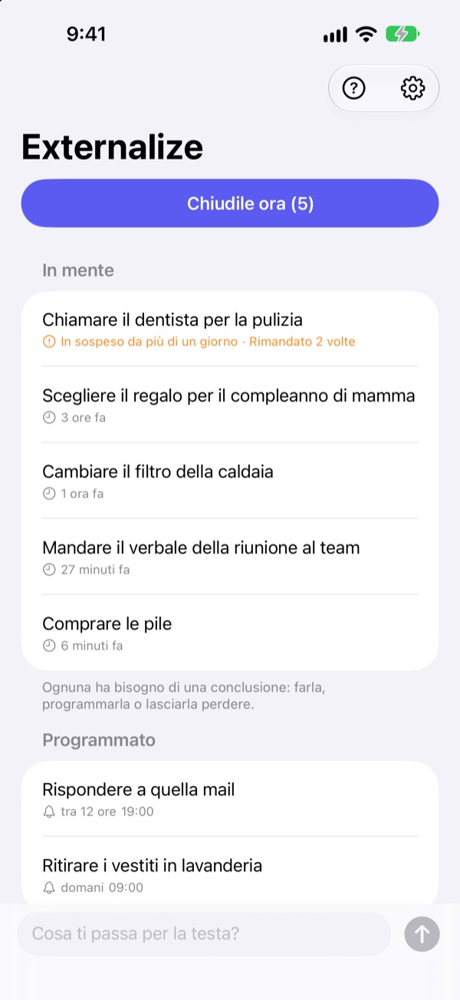
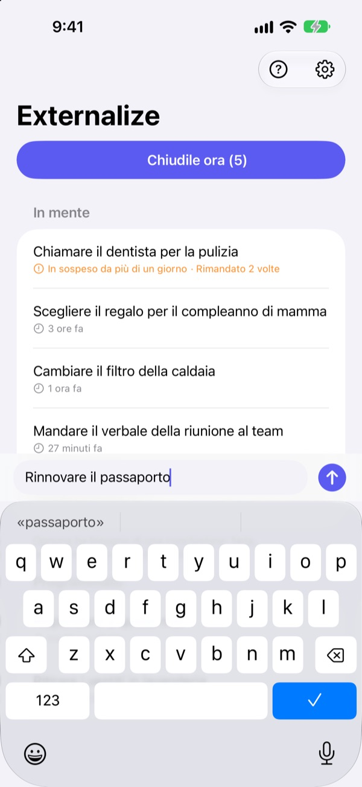
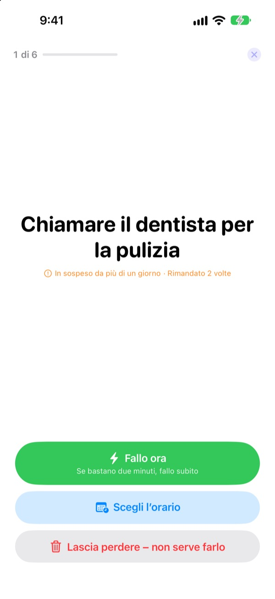
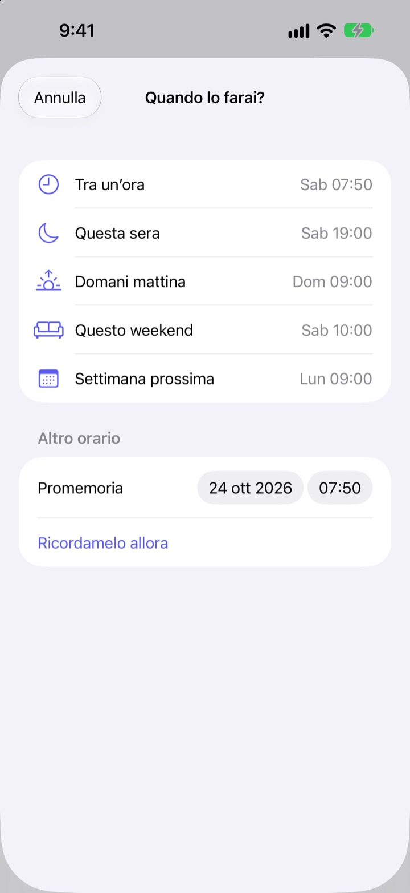

Scrivilo ora.
Chiudilo stasera.
«Ah già, devo…» Toglitelo dalla testa in poche parole e non pensarci più. La sera chiudi quello che resta, una cosa alla volta.
Tutte le funzioni sono gratuite. Niente account, niente accesso.

Provalo qui
Scrivi qualcosa che hai in mente o tocca un esempio. Poi premi «Chiudile ora» e dai una fine a ogni cosa.
Anche le piccole cose occupano spazio in testa
Sotto la doccia, al semaforo, appena prima di addormentarti: «Devo fare quella cosa». Non hai dove scriverla, così la tieni a mente, e quello che stai facendo ne risente. Le app per le attività vogliono prima una lista e una scadenza, e persino scriverla diventa un impegno.
Tre secondi, poi lasci andare
Apri l’app e scrivi nella riga in basso. Niente liste, cartelle o scadenze da scegliere.
Tocca il widget della schermata di blocco e si apre su una riga vuota. Di’ a Siri Ricorda in Externalize o assegnalo al tasto Azione, e viene salvato senza aprire l’app.

La sera, una cosa alla volta
Se resta qualcosa, ricevi un solo promemoria alle 21. Se non resta niente, nessun avviso.
Quando inizi, le cose compaiono una alla volta, in grande. Scegli «Fallo ora», «Scegli l’orario» o «Lascia perdere» e passi alla successiva. Se bastano due minuti, avvia il timer e fallo subito.

Niente resta a marcire
Scegli «Tra un’ora», «Questa sera», «Domani mattina», «Questo weekend» o «Settimana prossima» e tornerà in quel momento. Dalla notifica puoi segnarla «Fatto», spostarla a «Domani mattina» o «Lascia perdere».
Quello che aspetta da più di un giorno e quello che rimandi di continuo viene segnalato, così vedi subito cosa ti sfugge sempre.

Tre passi per iniziare
- 1
Scrivilo
Poche parole nell’app, nel widget della schermata di blocco o con Siri, quello che hai più vicino.
- 2
Consenti le notifiche
Te lo chiede una volta, la prima volta che scrivi qualcosa. Servono per il promemoria serale e per gli orari che scegli.
- 3
Chiudi la sera
Tocca il promemoria o «Chiudile ora» e dai una fine a ogni cosa.
Direttamente dalla lista
- Tocca una voce
- scegli «Fatto», «Scegli l’orario» o «Lascia perdere»
- Scorri a destra
- Fatto (esce dalla lista)
- Scorri a sinistra
- Lascia perdere, oppure «Programma» per scegliere l’orario
- Chiudile ora
- passa in rassegna ciò che resta, una alla volta
- Ricorda in Externalize
- dillo a Siri senza aprire l’app
- Impostazioni ▸ Promemoria serale
- cambia l’orario o disattivalo
Quando programmi, «Questa sera» vuol dire alle 19, «Domani mattina» alle 9, «Questo weekend» sabato alle 10 e «Settimana prossima» lunedì alle 9. Puoi anche scegliere qualsiasi data e ora.
Domande frequenti
Posso scrivere qualcosa senza aprire l’app?
Sì. Di’ a Siri Ricorda in Externalize: ti chiede cosa annotare e lo salva. Assegna la scorciatoia «Scrivi» al tasto Azione in Impostazioni e basta una pressione.
Come aggiungo il widget alla schermata di blocco?
Tieni premuto sulla schermata di blocco, tocca Personalizza e scegli la schermata di blocco, tocca l’area dei widget e aggiungi Externalize. Un tocco apre una riga vuota e il widget mostra quante cose restano. C’è anche un piccolo widget per la schermata Home.
Posso cambiare o disattivare il promemoria serale?
Tocca l’ingranaggio in alto a destra ▸ Promemoria serale per cambiare l’orario o disattivarlo. Di base è alle 21 e non suona nei giorni in cui non resta niente.
Non ricevo notifiche.
Se le impostazioni di Externalize dicono che le notifiche sono disattivate, tocca il pulsante lì per attivarle nelle Impostazioni dell’iPhone. Nei giorni in cui non resta niente il promemoria serale non arriva, ed è normale.
Come torna una cosa programmata?
All’orario scelto arriva una notifica. Tienila premuta per scegliere subito «Fatto», «Domani mattina» o «Lascia perdere». Se non fai nulla, torna in «In mente» e la chiudi la volta dopo.
Posso recuperare una voce segnata come fatta o lasciata perdere?
No. Le voci chiuse escono dalla lista e non c’è un archivio. Se hai dubbi, scegli un orario invece di lasciar perdere.
Le mie voci passano su un nuovo iPhone?
No. Tutto resta su questo dispositivo e non viene mai inviato a iCloud o a un server. Se elimini l’app, si cancella anche il contenuto.
Su quali dispositivi funziona?
Su iPhone con iOS 17 o successivo.
Domande o un bug? Scrivi a leeo@kakao.com. Indicare il modello di iPhone e la versione di iOS ci aiuta a controllare prima.